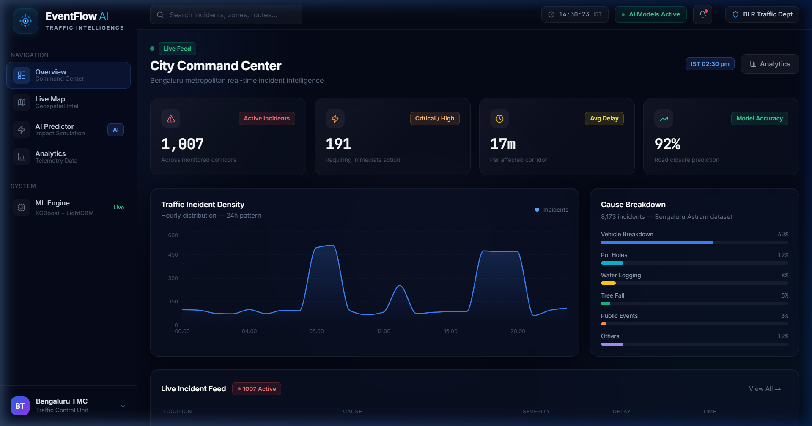
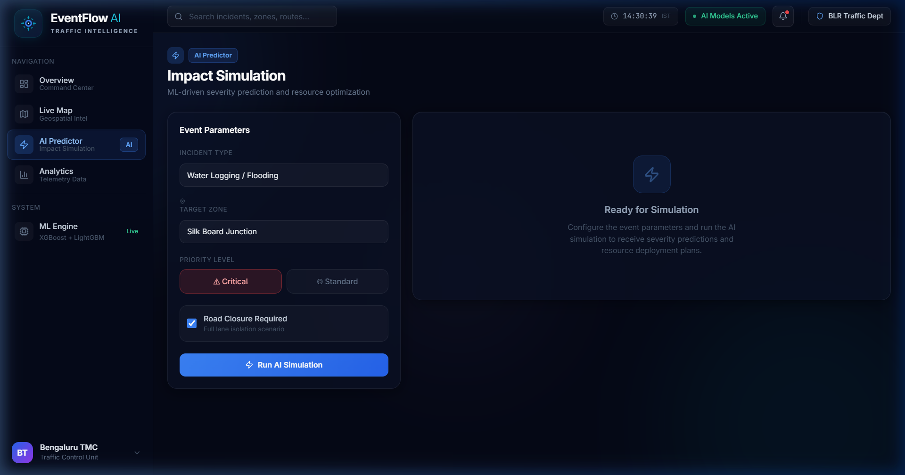
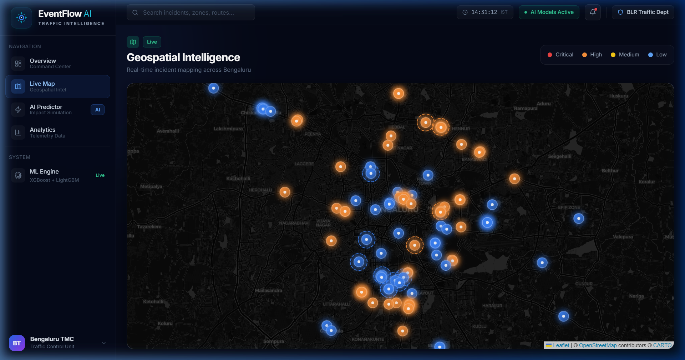
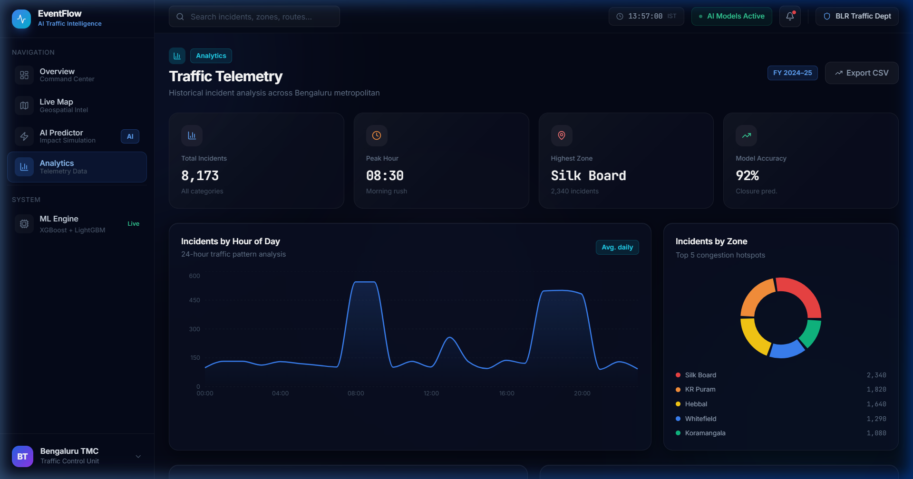

Predict Event Severity · Optimize Resources · Divert Traffic
Political rallies, festivals, sports events, construction, and sudden gatherings create localized traffic breakdowns that existing systems cannot predict or manage proactively.
Current traffic management is purely reactive — responding to congestion after it happens, not before.
Police, barricades, and tow units are deployed based on experience rather than data-driven optimization.
Event organizers and authorities cannot estimate severity, duration, or ripple effects of an event on traffic.
Alternate routes are communicated too late and don't account for dynamic congestion on diversion corridors.
We fuse machine learning with operations research to predict traffic disruptions before they peak, then automatically recommend optimized resource allocations and dynamic diversion routes.
Real-time event data from Bengaluru Astram feed
ML models forecast severity, closure, duration
ILP engine deploys police, barricades, units
A* graph routing around affected junctions
Dashboard for real-time decision making
Glassmorphism dashboard with real-time incident feed, interactive geospatial map, and AI prediction simulator.
RESTful API with Swagger docs. Handles events CRUD, prediction inference, resource optimization, and route diversion.
Enterprise-grade XGBoost tree-ensembles optimized with log-transformations and F1-tuned probability thresholds.
XGBoost v3.0 implementation trained on Bengaluru Astram traffic incident data with temporal, spatial, real-time weather, and cascade risk features.
Real-time incident intelligence with live KPIs, hourly traffic patterns, and active incident feed.

Configure event parameters → ML predicts severity + closure probability → ILP optimizes resource deployment → Graph engine generates diversion routes.



State-of-the-art XGBoost engines with dynamic scale_pos_weight optimization and F1 threshold tuning. Robust to noisy, highly-imbalanced data.
From raw Astram CSV → Feature Engineering → Model Training → API Inference → Dashboard Visualization. Complete data lifecycle.
ILP-inspired resource allocation that minimizes deployment cost while meeting safety thresholds per severity tier.
A*/Dijkstra pathfinding over Bengaluru's road network graph. Considers real-time congestion on alternate corridors.
One-command retrain script. As new events are resolved, operators retrain to adapt to evolving local patterns.
docker-compose up --build — Frontend, Backend, and Database all containerized and ready.
EventFlow AI — Making cities smarter,
one prediction at a time.
Repository: github.com/Shiv-Patel-416/EventFlowAI
Built with: Next.js · FastAPI · XGBoost v3.0 · Docker